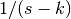

Intelligence
0.0.8
Intelligence
0.0.8
Laplace transform is useful in equation solving. By definition, Laplace transform transforms a function  defined on into another function by calculating the convolution
defined on into another function by calculating the convolution
or symbolically,
A table of important Laplace transforms can be found on mathworld.wolfram.com. Here we steal some of the commonly used.
It can also be applied to differentials.
Laplace Transform of Differentials
The general form is
Integrals with upper limit as argument also transform nicely.
Laplace transform is useful in solving differential equations because it transforms many equations into fractions and polynomials. A simple example is the harmonic osicllators. The equation of motion is
which is transformed into
The solution to it is
We can spot sin and cos from the solution, or more generally perform an inverse Laplace transform,
This example is too simple sometimes naive. However, it shows the spirit.
Caveats
Laplace transform has a lot of counter intuitive expressions.
Laplace transform of product of two functions is NOT the product of the Laplace transforms . However, if one of the functions is a constant, say , we can prove that the Laplace transform of is  .
.
The product of two Laplace transforms is the Laplace transform of a convolution
Small s corresponds to large x, due to the nature of the exponential suppression in Laplace transform. For example, for small argument x, the function becomes almost 1, meanwhile, the Laplace transform of the function  becomes under large s. We can see that the two limits are consistant since the Laplace transform of 1 is .
In so many circumstance the Laplace transform doesn’t exist simple because the integral doesn’t converge. Please beware of this and use the transform only when it exists.
Inverse Laplace Transform
We do not usually use the general form of inverse Laplace transform since we can find it in the table. Nevertheless we write it down here.
By defining , we can rewrite the formula
The more interesting application is to solve matrix differential equations. For any equations
Laplace transform takes it to the form
The solution is
So the final solution for is
We could work out the Taylor expansion of solution,
The inverse Laplace transform can be done simply term by term,
Finally we obtain the formal solution of the system, which is
Only Works for Constant Coefficients
This result only works for constant coefficients. In general, if the matrix  depends on the argument
depends on the argument  , the solution can be systematically calculated using the so called Magnus Expansion. However, it is as tedious as a numerical solution.
, the solution can be systematically calculated using the so called Magnus Expansion. However, it is as tedious as a numerical solution.
© 2018, Lei Ma| GitHub| Statistical Mechanics Notebook | Index | Page Source| changelog| Created with Sphinx